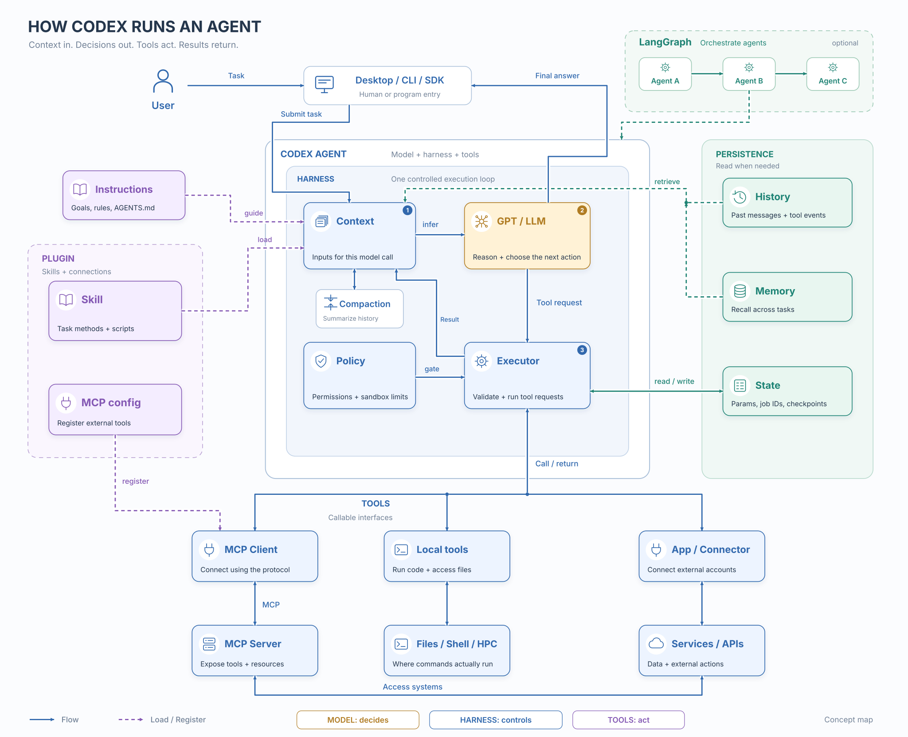

Agent Series — Part 0
Agent 0: Models, Harnesses, and Tools
A request such as “start from this crystal structure and calculate a relaxation observable” sounds like one task. Carrying it out involves many different activities: choosing a method, preparing inputs, launching programs, reading results, checking evidence, and deciding what may run next. A language model contributes to these decisions, but the working system includes much more than the model.
This series starts from a practical confusion. Skills, plugins, tools, MCP, memory, and workflow frameworks are often discussed as if they were interchangeable ways to make an agent more capable. They address different parts of the system. Before comparing runtimes or adding more agents, we need to identify what each part does and how information moves between them.
Part 0 builds that vocabulary around Codex and follows one scientific task through it. Part I then examines explicit workflow control in LangGraph through a 500-requirement experiment. The aim is to distinguish better instructions, better access to information, and stronger execution controls before deciding which one a task needs.
1. Model, Agent, and Harness
A model receives an input and generates an output. That output can contain an answer, a proposed action, or a structured request to call a tool. The model can generate a shell command, but generating the command does not run it. Some surrounding program must interpret the request, decide whether it is permitted, execute it, and return the result.
An agent is the working arrangement that pursues a task through such interactions. In this article, the term includes the model, the runtime that drives it, and its available tools. An agent need not involve several models, and it need not make every decision autonomously. A single model repeatedly receiving tool results already supports an agent loop.
The harness is the software around those model calls. It assembles inputs, exposes tools, handles execution and permissions, and maintains the conversation. In Codex, this surrounding machinery turns model outputs into actions in a working environment. Different projects use “runtime,” “agent framework,” and “harness” with overlapping meanings; here, harness emphasizes the machinery that makes an individual agent operate.
One simplified loop is enough to see the division of work:
- The harness assembles the current instructions, selected conversation history, tool descriptions, and relevant evidence.
- The model produces a final answer or requests a tool operation.
- The harness checks and dispatches an allowed operation.
- The returned observation becomes part of the next model input.
- The loop continues until the agent finishes, pauses, or encounters a condition requiring another decision.
The model supplies reasoning and proposed actions. The harness supplies the execution process. OpenAI’s agent-loop explanation describes this repeated interaction; its App Server architecture article explains how Codex capabilities are surfaced to clients. These are related questions: one concerns the loop, and the other concerns the interfaces around it.
2. Read the Architecture Map



Start with the three numbered blocks in the center: Context → GPT/LLM → Executor → Context. The model sees an input, proposes an action, and later receives the outcome. Policy controls constrain the executor. The surrounding harness manages this interaction.
Then read the sides. Instructions and skills supply relevant procedural information. History and memory can supply selected past information. Structured state records operational facts. Below the loop, tool interfaces lead to files, programs, or external services. The optional LangGraph panel shows that an outer workflow can coordinate several agents, each with its own execution arrangement.
Some boxes are deliberately adjacent rather than arranged as a single stack. A plugin is a distribution package; MCP is a protocol; context is information; a harness is running software. Drawing them as consecutive execution layers would imply a dependency that does not generally exist. The boxes also do not locate the model on the user’s computer.
3. Tools Execute; Skills Explain a Method
A tool is an executable interface
A tool gives the agent an operation it can request. Its description tells the model what it does, its input schema specifies acceptable arguments, and its implementation performs the action. A structure reader might accept an artifact identifier and return species, cell vectors, and coordinates. An input generator might accept a reviewed parameter set and return prepared files.
The same operation can be implemented locally or through a remote service. The important separation is between the interface shown to the model and the code that actually runs. A plausible-looking tool request is not proof of execution; its returned result and retained artifacts provide the operational evidence.
A skill packages procedural knowledge
A skill supplies reusable instructions for a class of tasks. It can explain what to inspect, which decisions to make, how to use tools, and what evidence a successful result requires. In Codex, a skill contains a SKILL.md file and may include scripts, references, and assets. Codex can expose a skill’s name and description first, then read its full instructions when using it. This is progressive disclosure: task-specific material need not all be placed in the initial input. See the official skills documentation.
For example, a relaxation skill can describe how to reason about a material and its convergence criteria. A tool prepares the actual VASP inputs. If the skill includes a validator script, that script still needs to be invoked through an executable interface. Skills and tools can therefore cooperate closely without becoming the same object.
Instructions and enforced controls have different owners
“Read the relaxation skill before preparing inputs” is an instruction the agent must follow. A program can instead make loading that skill part of stage entry, reject an incomplete input object, or refuse to start a dependent stage without an accepted predecessor. The difference is where the condition is checked.
A tool allowlist can restrict the operations exposed to an agent, provided the implementation also respects that boundary. An unrestricted shell tool can still execute many programs even if only a few named scientific tools appear beside it. Effective control must account for the capabilities behind the exposed interfaces. Similarly, a script-backed skill can enforce rules; workflow software is not the only place where deterministic checks can live.
The earlier article Codex Skills as Workflow Engineering develops the practical construction of skills and validators. Here, the narrower purpose is to place them in the agent’s architecture.
4. Plugins, Apps, and MCP Connect Different Things
| Concept | Its role | A concrete example |
|---|---|---|
| Skill | Reusable procedural guidance and supporting resources. | A structure-relaxation procedure. |
| Tool | An operation the runtime can execute. | Read a structure or submit a job. |
| App / connector | An integration with a service and its account or access configuration. | A repository service exposing search and issue tools. |
| MCP | A standard protocol for connecting a host to tool and information providers. | An MCP client requesting an operation from a server. |
| Plugin | A reusable package for distributing capabilities. | A package containing a skill and an MCP connection. |
An app in this context means an external service integration. It is not the Codex Desktop window. A connected service may provide multiple tools and require its own authorization. An integration and an individual tool therefore live at different levels.
MCP, the Model Context Protocol, standardizes communication between a host’s client and a server that exposes tools or information. A request can travel from the agent’s execution machinery through an MCP client to a server, which handles the operation and returns a response. The server may run locally or remotely. MCP does not by itself choose the scientific procedure, manage every model conversation, or impose a workflow. Local tools can operate without MCP. OpenAI’s MCP documentation explains the connection model.
A plugin makes capabilities installable and reusable. It may bundle skills and MCP servers or connections. A standalone skill does not require a plugin, and installing a plugin does not automatically create a new agent with a separate conversation. Availability also depends on the client. The plugin documentation distinguishes packaging from the capabilities supplied by that package.
5. Context, Compaction, Memory, and State
For information newly supplied by files, conversation records, or external systems to affect a particular model call, it must reach that call’s input through a supported interface. This is separate from knowledge already encoded in the model’s weights. Keeping a file on disk, retaining a long chat, or saving a database record does not mean its contents are present in every inference. This makes information selection a central part of the harness.
| Information | What it represents | How it affects an action |
|---|---|---|
| Current context | The information actually provided for this model call. | Directly conditions the next generated output. |
| Conversation history | Retained messages and tool events from a conversation. | Selected history or a compressed representation enters later calls. |
| Long-term memory | Useful information retained across work or tasks. | Retrieved or injected material supplies relevant past knowledge. |
| Workflow state | Explicit operational records such as artifact identities and stage outcomes. | Program logic reads it for routing, recovery, and validation; selected fields may also enter a prompt. |
Compaction manages a limited input window
A growing conversation eventually requires selection or compression. Compaction carries useful task information forward in a shorter representation, which may include a summary or model-supported compressed items. It does not enlarge the model’s context window, and it does not guarantee lossless preservation of every instruction or observation. The full saved record and the representation used for the next call serve different purposes.
Memory makes selected past information available
Long-term memory can retain preferences, recurring conventions, or useful findings across tasks. It requires a storage and retrieval policy; there is no universal requirement to implement it as a vector database. Reading such memory changes the input available to the model, not the model’s weights. Codex’s local memory is also separate from ChatGPT web memory. Required project guidance belongs in appropriate instruction files rather than depending only on helpful recall. See the official memory guide.
Scientific state needs explicit records
“The relaxation is finished” is insufficient for a downstream calculation. Which structure was accepted? Which inputs produced it? What job ran? Which checks passed? A workflow should store those identities and outcomes as structured records and verify the underlying artifacts. A natural-language summary can explain the outcome, but it should not be the sole authority for exact parameters or stage transitions.
This distinction is particularly useful in long calculations: compaction manages what fits into a conversation, memory supports recall across work, and workflow state supports controlled continuation. None substitutes for all the others.
6. Follow One Scientific Stage
Consider the instruction: “Relax this structure and prepare the next electronic-calculation stage.” The following is an architecture walkthrough, not a completed VASP calculation or a prescription for numerical settings.
- Identify the input. A structure-reading tool inspects the supplied artifact. The stage records its identity and the physical information needed for subsequent decisions.
- Load the relevant method. The relaxation agent receives its stage objective, selected system information, and the relaxation skill. Unrelated writing or trajectory-analysis instructions need not occupy its context.
- Prepare a candidate. The model proposes choices supported by the physical task. The input-generation tool writes a candidate package, and validators check the fields they are designed to enforce.
- Review before proceeding. A reviewer can inspect that package using a separate context and review instructions. A program checks the required review result before allowing the next operation. An independent review context reduces shared distraction; it does not guarantee a correct scientific judgment.
- Execute and inspect evidence. If job submission is within the authorized scope, the executor submits it and retains the job identity. Later checks distinguish a running job, successful program termination, numerical convergence, and scientific acceptance.
- Pass an explicit handoff. The next stage receives the accepted structure, relevant settings, and validation evidence. It can begin a fresh agent conversation instead of inheriting the full relaxation discussion.
This walkthrough locates the actual controls. The skill supplies method guidance. Tools interact with files and compute systems. Review supplies an assessment. The outer program decides whether the recorded result permits progress. Explicit handoffs make context separation possible; simply naming two agents does not establish that their inputs are isolated.
The original high-level scientific request can still be underspecified. A structure alone does not settle the electronic states, physical approximations, or observable definition needed for a relaxation-rate calculation. A well-organized runtime makes those decisions visible at the right stage; it does not remove the need for them.
7. Where LangChain, LangGraph, and Deep Agents Fit
Once the individual agent is clear, framework comparisons become easier. They concern reusable software around model calls, tools, and control flow.
| System | Useful architectural role | What must still be decided |
|---|---|---|
| Codex | A working agent with its own harness and supported interfaces. | Its instructions, available tools, access, and task-specific acceptance rules. |
| LangChain | Model/tool integrations and higher-level agent-building components. | Which components and middleware the application actually uses. |
| LangGraph | Explicit orchestration over state, nodes, and routes. | Stage contracts, context selection, persistence, and control conditions. |
| Deep Agents | A ready-made harness built on LangChain and LangGraph. | Model, backend, permissions, tools, and context configuration. |
LangGraph can mix deterministic functions and model-driven steps. It does not require LangChain. Deep Agents supplies an agent harness with planning, subagents, and context-management capabilities on top of that ecosystem. These descriptions follow the LangGraph overview, LangChain overview, and Deep Agents overview. A framework’s name alone does not determine the actual tools or memory policy of an application.
The execution route determines who owns the context
Suppose Codex Desktop launches a Python program that runs a Deep Agents agent. There are now two conversations: the outer Codex conversation and the inner agent’s model calls. Each has its own execution process and context policy. Compacting the outer conversation does not automatically compact the inner one, nor does the inner agent automatically receive every outer skill, memory, or tool.
A LangGraph node can instead call the complete Codex executor through a supported CLI or SDK route. That Codex instance then manages its own agent loop and conversation. Fresh versus resumed conversations still need to be chosen explicitly. Directly calling a model API from another framework does not import the Codex harness. The Codex SDK and App Server provide programmatic integration paths, with different interfaces and intended uses.
Graph checkpoints also do not undo external effects. If a stage submitted a compute job before an interruption, recovery must identify and reconcile that job rather than assume the external world reverted with the graph. Reliable continuation requires both saved workflow state and appropriate handling of external operations.
8. A Practical Architecture Check
The practical result of this introduction is a way to inspect a proposed system before adding another framework. For a scientific workflow, write down the owner of each item below:
| Question | A concrete answer should name |
|---|---|
| What actually calls the model? | The Codex executor, another agent harness, or application code using a model API. |
| What enters this stage’s context? | Its goal, selected skill, relevant upstream artifacts, and required review instructions. |
| What can it execute? | Registered tool interfaces and the actual capabilities behind them. |
| What blocks an invalid transition? | A named validator, policy, or routing condition checked by code. |
| What survives interruption? | Artifact identities, job identities, accepted results, and configured durable state. |
| Who compresses each conversation? | The runtime that owns that conversation, with an explicit policy. |
If the problem is missing procedural knowledge, improve the skill and the evidence supplied at the decision point. If the problem is a missing external capability, add an appropriate tool or integration. If the problem is an invalid transition or an expensive task that cannot resume safely, implement the relevant program control. These changes may cooperate, but they solve different failure modes.
Part I takes the next step: it examines what happens when a long instruction task is divided among separate model contexts, including the benefits, coherence costs, and token costs. This introduction makes no claim that a particular framework improves model accuracy; it establishes the architecture needed to ask that question precisely.
Primary References and Scope
This is an introductory synthesis of publicly documented concepts, checked on 8 November 2026. The diagram is original explanatory artwork. Product details and client support can change; it is not an exhaustive description of Codex internals.
- OpenAI: Unrolling the Codex agent loop; Unlocking the Codex harness.
- Official Codex documentation: Glossary; Skills; Plugins; MCP; Memories.
- LangChain documentation: LangChain; LangGraph; Deep Agents.